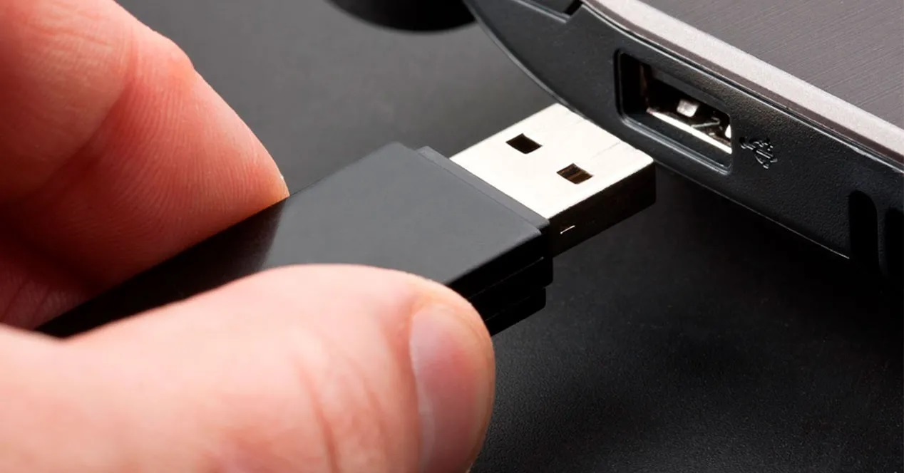
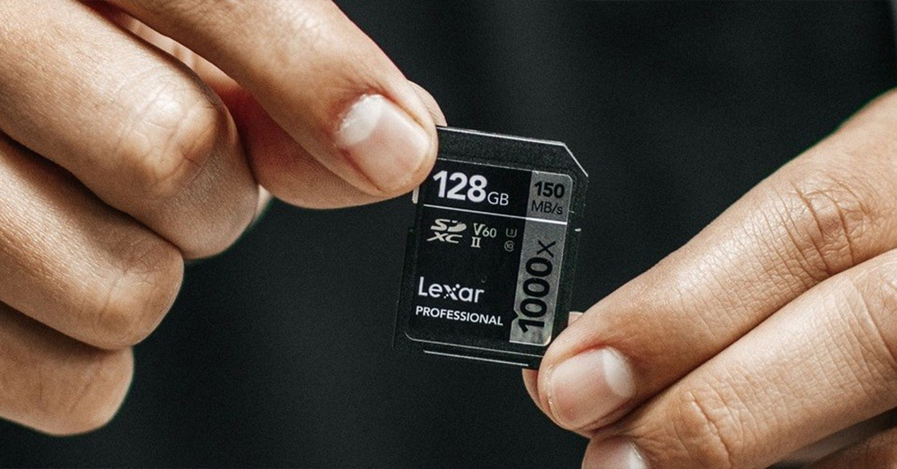

1
Intro
La más joven y prometedora forma de almacenamiento de información.
Utiliza circuitos electrónicos para almacenar la información, los cuales
no necesitan moverse para efectuar tal función. Este dispositivo es
encontrado en los pendrives y tarjetas de memoria, muy comunes hoy en
día. Debido su fácil manipulación, estos dispositivos ganaron fuerza
rápidamente en el mercado.
Sin embargo, su capacidad de almacenamiento de información todavía es
limitada debido al alto valor de esta tecnología. Su tamaño es muy
pequeño y se utilizan masivamente en computadoras, cámaras digitales y
teléfonos celulares. Se los identifica cómo unidades de estado sólido
(SSD).
Las unidades de estado sólido o SSD (Solid State Drive) son una alternativa a los discos duros. La gran diferencia es que mientras los discos duros utilizan componentes mecánicos que se mueven, las SSD almacenan los archivos en microchips con memorias flash interconectadas entre sí. Por lo tanto, casi podríamos considerarlos como una evolución de las memorias USB. Los SSD suelen utilizar memorias flash basadas en NAND, que como también son no-volátiles mantienen la información almacenada cuando el disco se desconecta. No tienen cabezales físicos para grabar los datos, en su lugar incluyen un procesador integrado para realizar operaciones relacionadas con la lectura y escritura de datos.
Las unidades de estado sólido o SSD (Solid State Drive) son una alternativa a los discos duros. La gran diferencia es que mientras los discos duros utilizan componentes mecánicos que se mueven, las SSD almacenan los archivos en microchips con memorias flash interconectadas entre sí. Por lo tanto, casi podríamos considerarlos como una evolución de las memorias USB. Los SSD suelen utilizar memorias flash basadas en NAND, que como también son no-volátiles mantienen la información almacenada cuando el disco se desconecta. No tienen cabezales físicos para grabar los datos, en su lugar incluyen un procesador integrado para realizar operaciones relacionadas con la lectura y escritura de datos.

2
Eficacia
La grabación de la información en un dispositivo de almacenamiento por
medio electrónico se da a través de los materiales utilizados en la
fabricación de los chips que almacenan la información.
Para cada dígito binario (bit) a ser almacenado en este tipo de dispositivo existen dos puertas hechas de material semiconductor, la puerta flotante y la puerta de control. Entre estas dos puertas existe una pequeña capa de óxido, que cuando está cargada con electrones representa un bit 1 y cuando está descargada representa un bit 0.
Los dispositivos de almacenamiento por medio electrónico tienen la ventaja de poseer un tiempo de acceso mucho menor que los dispositivos por medio magnético, debido a que no contienen partes móviles. El principal punto negativo de esta tecnología es su costo, por lo tanto, los dispositivos de almacenamiento por medio electrónico aún tienen pequeñas capacidades de almacenamiento y costo muy elevado comparados a los dispositivos magnéticos.
Para cada dígito binario (bit) a ser almacenado en este tipo de dispositivo existen dos puertas hechas de material semiconductor, la puerta flotante y la puerta de control. Entre estas dos puertas existe una pequeña capa de óxido, que cuando está cargada con electrones representa un bit 1 y cuando está descargada representa un bit 0.
Los dispositivos de almacenamiento por medio electrónico tienen la ventaja de poseer un tiempo de acceso mucho menor que los dispositivos por medio magnético, debido a que no contienen partes móviles. El principal punto negativo de esta tecnología es su costo, por lo tanto, los dispositivos de almacenamiento por medio electrónico aún tienen pequeñas capacidades de almacenamiento y costo muy elevado comparados a los dispositivos magnéticos.